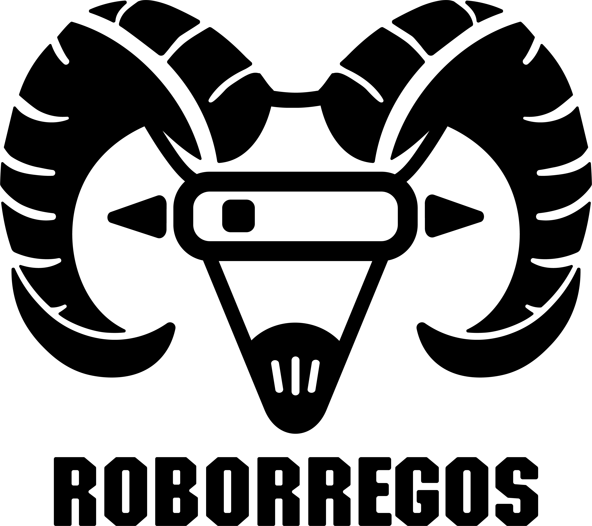
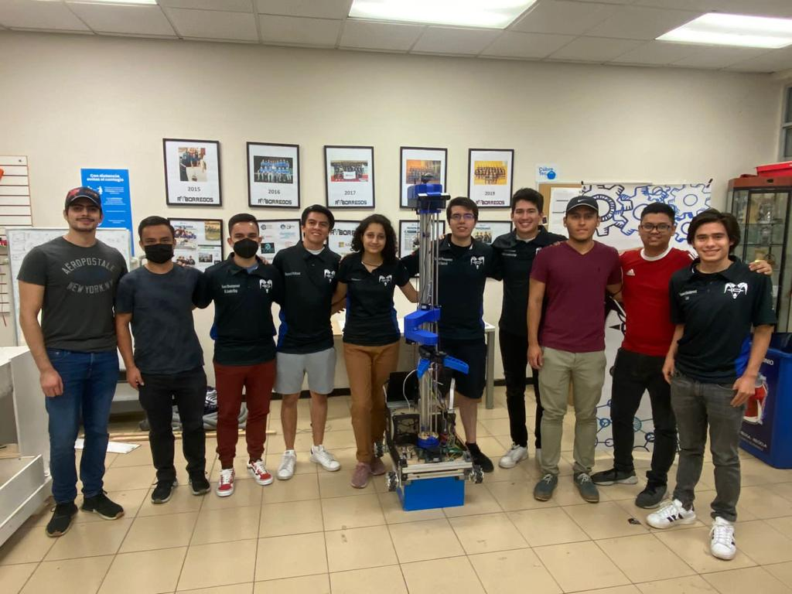
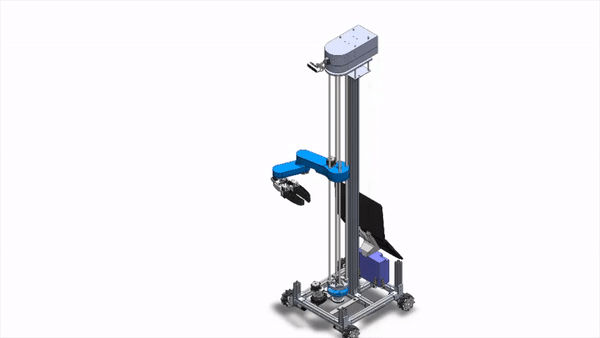

DESARROLLO DE PROTOTIPO FISICO
Robocup@Home | RoBorregos

@Home consiste en el diseño, desarrollo y manufactura de un robot de servicio para el hogar, dicho robot mejora la calidad de vida de personas con discapacidades motrices realizando actividades para la seguridad y comodidad del usuario, como cargar y traer objetos de diferentes lugares del hogar, recoger un espacio o atender a la llegada de invitados. Este proyecto está basado en la liga “Robocup @Home”, este semestre participamos en la sede de Japón en conjunto con la conferencia IROS, siendo el único equipo Mexicano en esta competencia.



Contacto
José Alfonso Cisneros Morales, A01283070@tec.mx, 8116241250